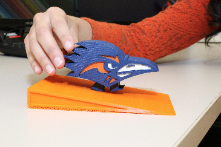
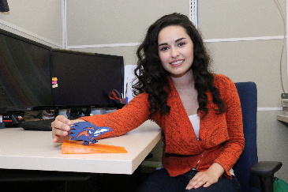
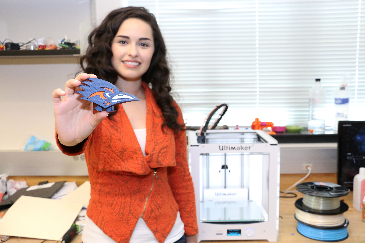

|
PHOTOS All hi-def images (zipped) 8 MB Photo credits: Erika Bruno, UTSA Communications and Marketing  Caption: Rowdy Walker Right click here and save for hi-def image (2 MB)  Caption: Christian Trevino with Rowdy Walker Right click here and save for hi-def image (2 MB)  Caption: Christian Trevino with Rowdy Walker Right click here and save for hi-def image (2 MB) |
Re-engineering an antique walking toy allows it to practically walk out of the 3D printer
Researchers at The University of Texas San Antonio (UTSA) have re-engineered a century old walking toy to be 3D printed as a single integrated assembly, thus allowing it to practically walk straight out of the 3D printer. Traditionally, the toy is made up of three pieces; a body with a fixed leg, a moving leg, and a hinge joint that attaches the two. “We have re-engineered the toy so that it can be 3D printed as a single integrated assembly, that includes the hinge joint. After the toy is printed we then have to manually remove the supporting material that holds the leg in place and the toy is ready to walk down an incline when launched.”, said Christian Trevino, the mechanical engineering graduate student who worked on the project. “Just like a windup toy uses potential energy stored in a spring, the walking toy uses potential energy as it descends downhill.” said Pranav Bhounsule, the faculty who mentored Trevino. “However, unlike a windup toy that has an intricate mechanism, the walking toy relies on its: mass distribution, inertia, and leg geometry to amble downhill.” “I wanted to make a toy that was based on the UTSA mascot, Rowdy, and 3D printing allowed me to tune the geometry and mass distribution without having to compromise the likeness of the logo.”, said Trevino. “I showed the toy around to people on campus and they wanted to know where they could buy one.”, said Bhounsule. However, the major limitation that prevents mass production of the toy is that 3D printing is still very slow. The toy takes 12 hours to print using a hobby grade printer. “One day when 3D printing becomes quicker, I hope to mass produce the toy and sell it as a souvenir.” said Trevino who aspires to be a entrepreneur. |
VIDEO (STREAMING) Link to YouTube video: https://youtu.be/wJ3W3MomWl4 Click below for streaming YouTube video: |
{kind=link}
{kind=link}
{kind=link}